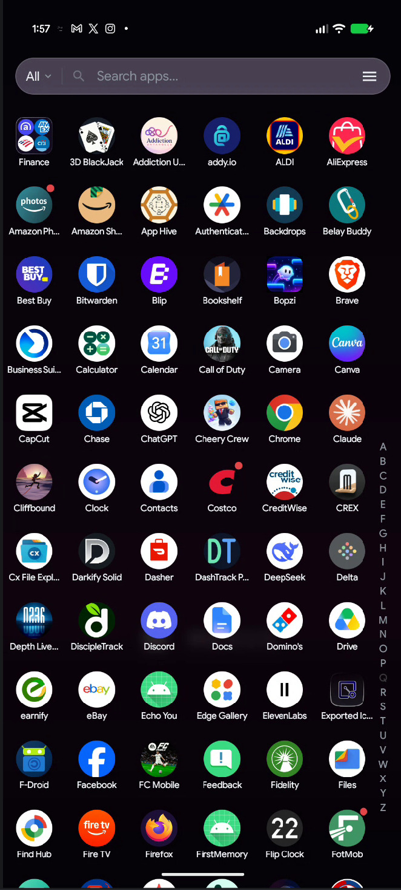
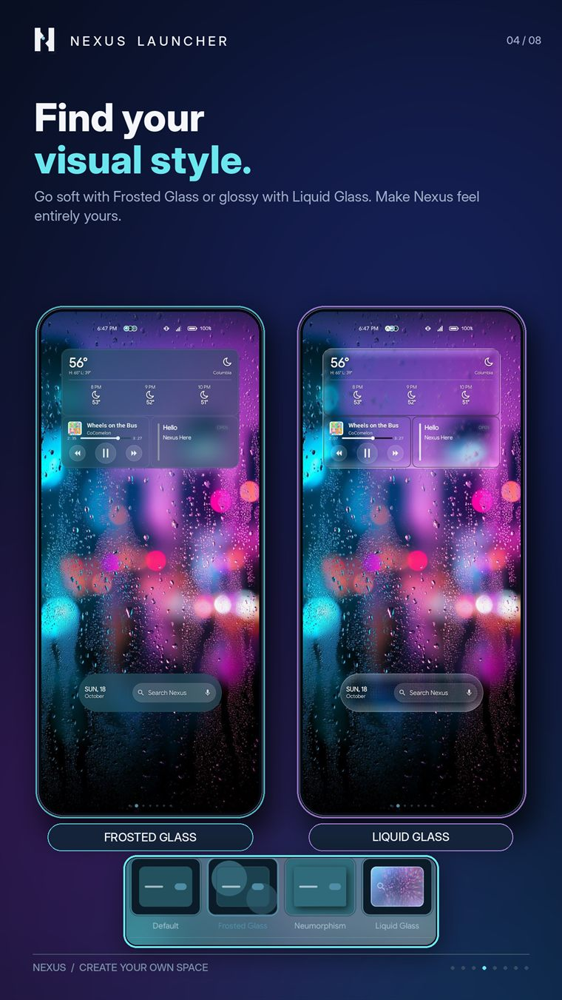
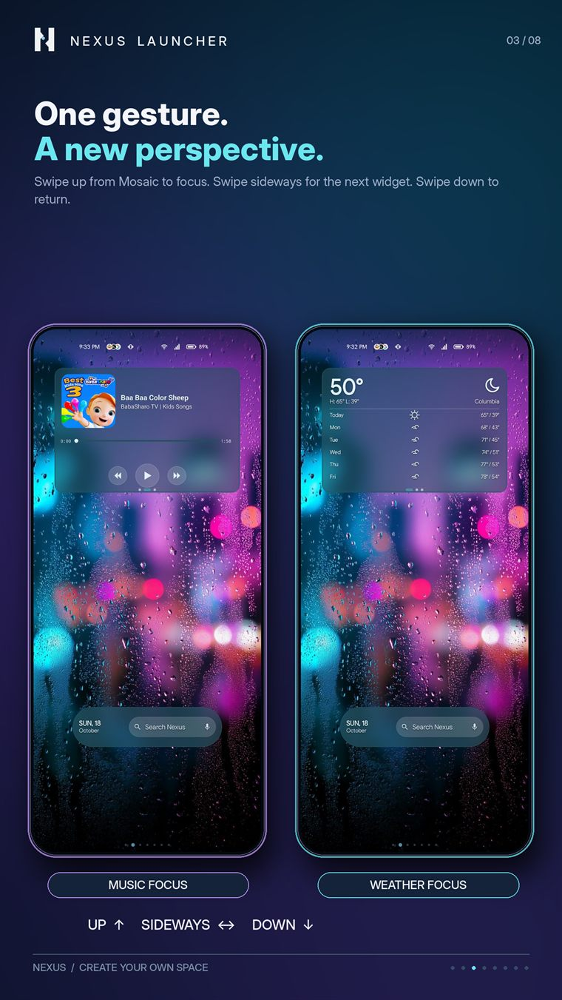
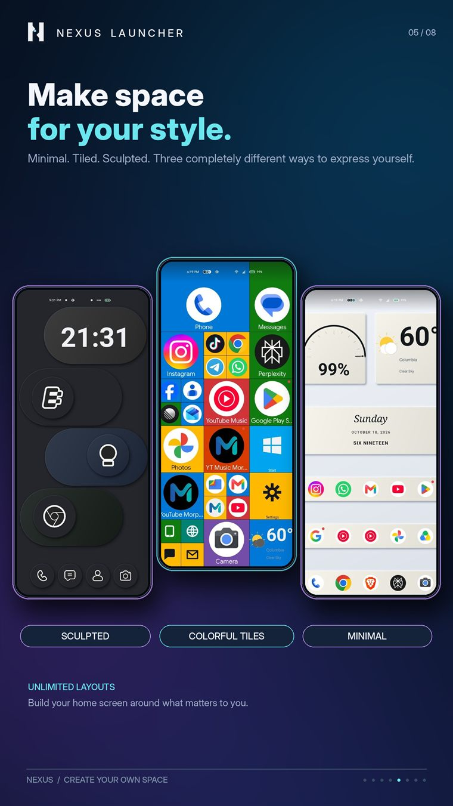
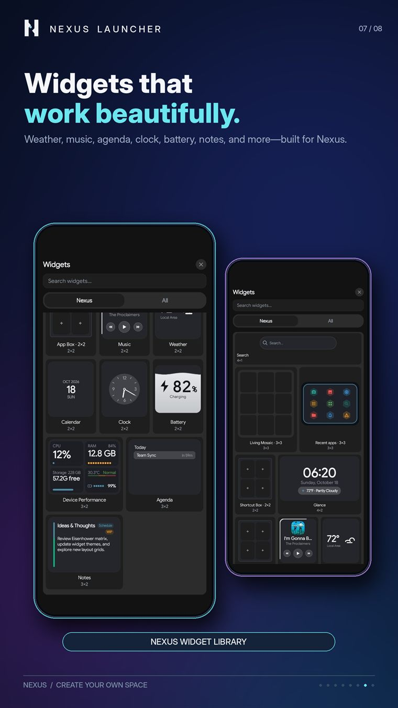
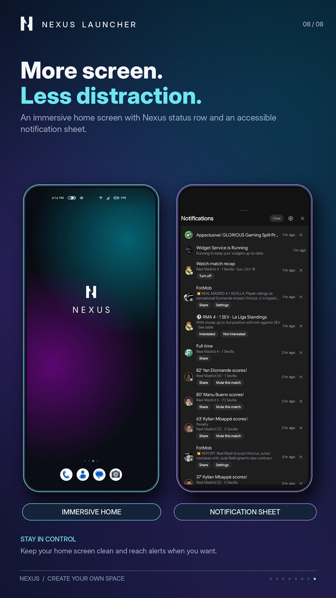

App drawer
Three drawer modes
Grid, List and Categories. Categories groups apps onto cards with three presentations — Spatial, Strip or List — and search covers apps and contacts in one field.

Android launcher · no ads
A custom Android launcher with a grid that flexes, a drawer with three ways to look, and a widget set drawn by the launcher itself. No ads, no accounts, nothing leaves your phone unless you ask it to.
Living Mosaic
Most launchers drop a widget on a grid and hope it lines up. Nexus widgets are built as a set: a clock, the weather and your next few events share one surface, resize together, and keep the same corner radius and spacing.
What is inside
Everything below is in the shipping app — no roadmap, no upgrade tier.
App drawer
Grid, List and Categories. Categories groups apps onto cards with three presentations — Spatial, Strip or List — and search covers apps and contacts in one field.

Appearance
Four UI styles change how the dock, folders and widgets are drawn, with opacity and refraction you control.
FrostedLiquid

Gestures
Swipe up, swipe down, double tap and two-finger gestures, assigned to the home screen, a folder or a single icon.

Layout
Columns from 4 to 12 and rows from 5 to 15, then spacing, icon size and label size. Anything on the grid resizes.
4 columns12 columns

Widgets
Living Mosaic, Shortcut Box, App Box and Live Apps, all themed with the launcher.
MosaicBoxes

Immersive
Hide the system bars, keep the gestures. Read and reply from a sheet inside the launcher, with unread badges on the icons that need them.

Settings
Settings opens on one hub with a search field. These are the pages people open twice — each row links to the chapter that explains it.
Large screens
A phone layout stretched across a tablet looks like a field with too few trees. Nexus keeps a separate large-screen grid, used in both orientations, so columns and rows can be edited independently of the phone layout.
Privacy
Your layout, wallpapers, notes and backups live on your device. There are no accounts, no ads and no analytics SDKs. The only network requests are the ones you trigger — weather, a news feed you added, or a web search.
Install Nexus, run the seven-card setup, and change any of it later. Every step in setup is skippable, and nothing is permanent.
Android 8.0+ · Free to download · com.systemslate.nexuslauncher